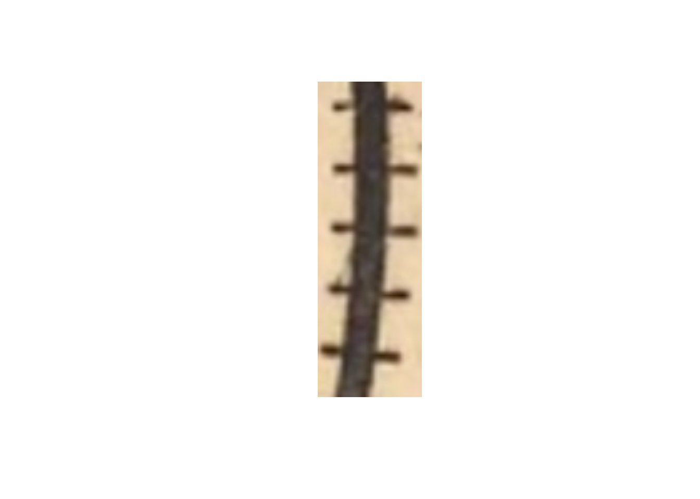
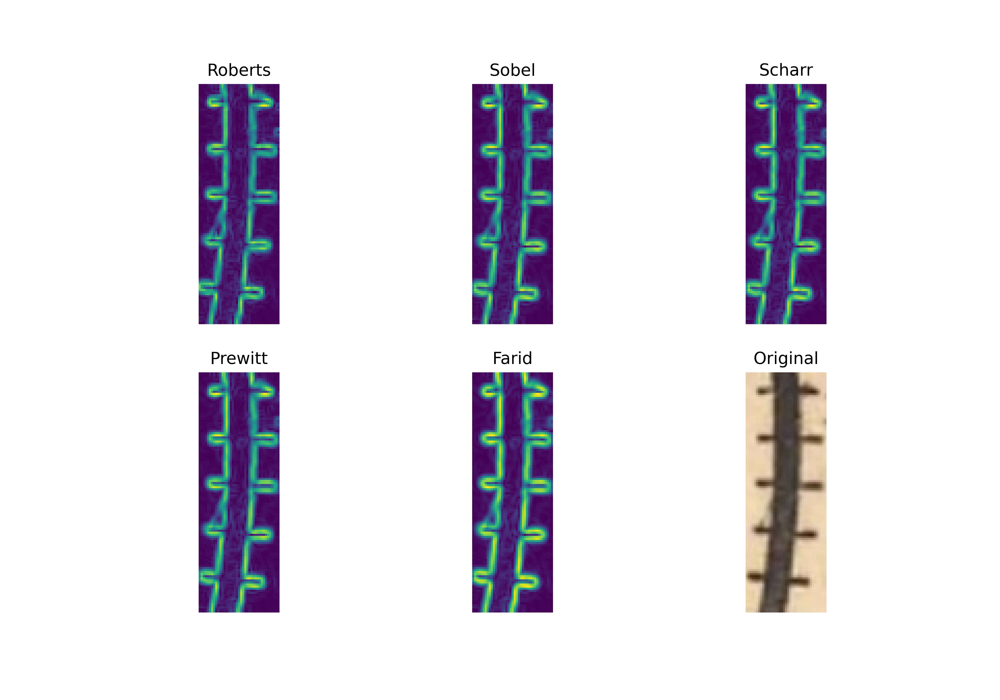
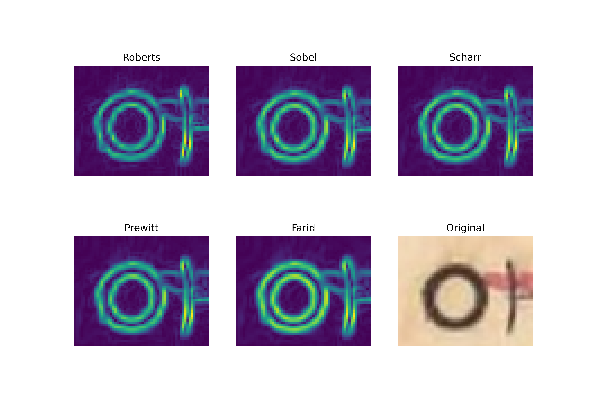

# Python
from skimage import io, filters
from skimage.color import rgb2gray
from matplotlib import pyplot as plt
from skimage.feature import match_templateI wanted to start by announcing that the small pause on uploads for the blog were due to my involvement in the DSPG program at Iowa State University for the summer. If there is interest on details for the program, one can check out the main page, the DSPG team blogs about each of the team’s work, or my personal blog where I document my work and goals working in the DSPG program for the summer of 2023.
This blog is a slight change of pace to the previous ones in that we are putting aside the spatial component and instead exploring how two different techniques in image processing apply to our historical map. The two techniques that will be discussed in the following two blogs are edge detection and template matching. To demonstrate the use cases, I’ll be working with the scikit-image library for python dedicated to image processing. We’ll focus on edge detection for this blog.
The following modules are required to run the functions we need for image processing.
Next we can go ahead and import the images we will be conducting the processing on.
# Python
# Importing Images
img = io.imread("Images/Postal_Buchanan_Route.png")[:,:,:3] ## ORIGINAL IMG
train_snip = io.imread("Images/TRAIN_Route.png")[:,:,:3] ## TRAIN LINE
city_snip = io.imread("Images/City.png")[:,:,:3] ## CITY POINTAs their name suggests, edge detection models work to find the edges of objects in images. Determining the contours and edges of objects on two dimensional planes is an easy task for the human visual system but not so much for machines which see the images as matrices of numerical values.
As humans, here is what we see when we want to view the image we loaded in called train_snip.
# R
# load image viewing library
library(imager)
# Plot image
im <- load.image(file = "Images/TRAIN_Route.png")
plot(im,axes = FALSE)
As we can see, its a snippet of one of the rail track features in our map. What the computer sees instead is a series of three arrays to represent the Red, Green, and Blue values across the image. The code below tells us that this image is 116 pixels in length, 39 pixels in width and has three channels which are RGB.
#Python
train_snip.shape(116, 39, 3)The multiple channels for color add additional mathematical complexity to the picture so most edge detection models instead opt to use gray scale renders of images to reduce that complexity. Edge detection models will commonly use a sliding window called a kernel which slides across the image and recalculates the values of pixels on the original image by a set of values determined for the kernel. I think that this is best explained interactively and DeepLizard has a fantastic tool that demonstrates how this process works.
Let’s convert the two snippets we have from the map in RGB to their gray scale forms. When we call the shape method we see that we no longer have the ‘3’ at the third slot, meaning that these images are now only a single channel.
# Python
gray_train = rgb2gray(train_snip)
gray_city = rgb2gray(city_snip)
gray_train.shape(116, 39)gray_city.shape(49, 60)There are a number of different edge detection models and important differences for the output of the models are based off of how they recognize the edges of features which have more rotational variance.
Let’s see how some of the models perform on our small train picture. Here are the different kinds of edge detection models we want to see processed. Scikit-Image provides functions on;
- Robert’s Edge Detection
- Sobel’s Edge Detection
- Scharr’s Edge Detection
- Preewitt’s Edge Detection
- Farid’s Edge Detection
# Python
### Edge Detection on Train
#### Roberts Edge Detection
edge_roberts = filters.roberts(gray_train)
#### Sobel Edge Detection
edge_sobel = filters.sobel(gray_train)
#### Scharr Edge Detection
edge_scharr = filters.scharr(gray_train)
#### Prewitt Edge Detection
edge_prewitt = filters.prewitt(gray_train)
#### Farid Transform
edge_farid = filters.farid(gray_train)Now to plot them next to each other so we can see a comparison of how the image turned out.
fig2 = plt.figure(figsize=(10,7))
rows = 2
columns = 3
fig2.add_subplot(rows,columns,1)
plt.imshow(edge_roberts)
plt.axis("off")
plt.title("Roberts")
fig2.add_subplot(rows,columns,2)
plt.imshow(edge_sobel)
plt.axis("off")
plt.title("Sobel")
fig2.add_subplot(rows,columns,3)
plt.imshow(edge_scharr)
plt.axis("off")
plt.title("Scharr")
fig2.add_subplot(rows,columns,4)
plt.imshow(edge_prewitt)
plt.axis("off")
plt.title("Scharr")
fig2.add_subplot(rows,columns,5)
plt.imshow(edge_farid)
plt.axis("off")
plt.title("Farid")
fig2.add_subplot(rows,columns,6)
plt.imshow(train_snip)
plt.axis("off")
plt.title("Original")
fig2.savefig("Train_Edges", dpi=600)
With the naked eye it looks like Sobel, Scharr, and Prewitt have similar outputs while Roberts and Farid produced values which had higher intensity values on different sections of the edges.
We can also do the same for an image snippet we have for the features on the map that identify cities. The following code chunk applies the same processing operations on those features.
# Python
### Edge Detection on City
#### Roberts Edge Detection
edge_roberts_city = filters.roberts(gray_city)
#### Sobel Edge Detection
edge_sobel_city = filters.sobel(gray_city)
#### Scharr Edge Detection
edge_scharr_city = filters.scharr(gray_city)
#### Prewitt Edge Detection
edge_prewitt_city = filters.prewitt(gray_city)
#### Farid Transform
edge_farid_city = filters.farid(gray_city)
fig1 = plt.figure(figsize=(10,7))
rows = 2
columns = 3
fig1.add_subplot(rows,columns,1)
plt.imshow(edge_roberts_city)
plt.axis("off")
plt.title("Roberts")
fig1.add_subplot(rows,columns,2)
plt.imshow(edge_sobel_city)
plt.axis("off")
plt.title("Sobel")
fig1.add_subplot(rows,columns,3)
plt.imshow(edge_scharr_city)
plt.axis("off")
plt.title("Scharr")
fig1.add_subplot(rows,columns,4)
plt.imshow(edge_prewitt_city)
plt.axis("off")
plt.title("Prewitt")
fig1.add_subplot(rows,columns,5)
plt.imshow(edge_farid_city)
plt.axis("off")
plt.title("Farid")
fig1.add_subplot(rows,columns,6)
plt.imshow(city_snip)
plt.axis("off")
plt.title("Original")
fig1.savefig("City_Edges", dpi=600)
The city image has continuous features which rotate more than our train image so the differences in certain edge intensities are better reflected. All of the process do a pretty good job with detecting the edges of the lines in the image.
Now that we have a sense of what these look like, let’s see what happens when run these on the complete image.
# Python
### Edge Detection for Complete Image
#### Roberts Edge Detection
edge_roberts_og = filters.roberts(gray_img)
#### Sobel Edge Detection
edge_sobel_og = filters.sobel(gray_img)
#### Scharr Edge Detection
edge_scharr_og = filters.scharr(gray_img)
#### Prewitt Edge Detection
edge_prewitt_og = filters.prewitt(gray_img)
#### Farid Transform
edge_farid_og = filters.farid(gray_img)
#
fig = plt.figure(figsize=(10,7))
rows = 2
columns = 3
fig.add_subplot(rows,columns,1)
plt.imshow(edge_roberts_og)
plt.axis("off")
plt.title("Roberts")
fig.add_subplot(rows,columns,2)
plt.imshow(edge_sobel_og)
plt.axis("off")
plt.title("Sobel")
fig.add_subplot(rows,columns,3)
plt.imshow(edge_scharr_og)
plt.axis("off")
plt.title("Scharr")
fig.add_subplot(rows,columns,4)
plt.imshow(edge_prewitt_og)
plt.axis("off")
plt.title("Prewitt")
fig.add_subplot(rows,columns,5)
plt.imshow(edge_farid_og)
plt.axis("off")
plt.title("Farid")
fig.add_subplot(rows,columns,6)
plt.imshow(img)
plt.axis("off")
plt.title("Original")
fig.savefig("Complete_Edges", dpi=600)
Looking at the whole map, I think the differences in the intensity values for the different techniques becomes more apparent. The success of the detectors in being able to identify the edges could be fruitful in the process of creating masks for the image to separate the features from the background. This could be done by setting a threshold for intensity values so that only those which are bright (and detected as edges) get preserved. An additional purpose may be for the preservation of map features digitally, since the edges are recorded accurately and uniformly.
For the purposes of the Historical Mapping project, edge detection is a useful tool because it doesn’t require training data. In an effort to make a model which works with maps through unsupervised classification, edge detection can help to separate features of the map we want the classifier to avoid trying to classify. It’s exact usage remains to be seen, but for the purposes of unsupervised classification, edge detection remains a popular option. Next time, we’ll look at template matching to see how intensity values on the map change based on templates provided of the map features.